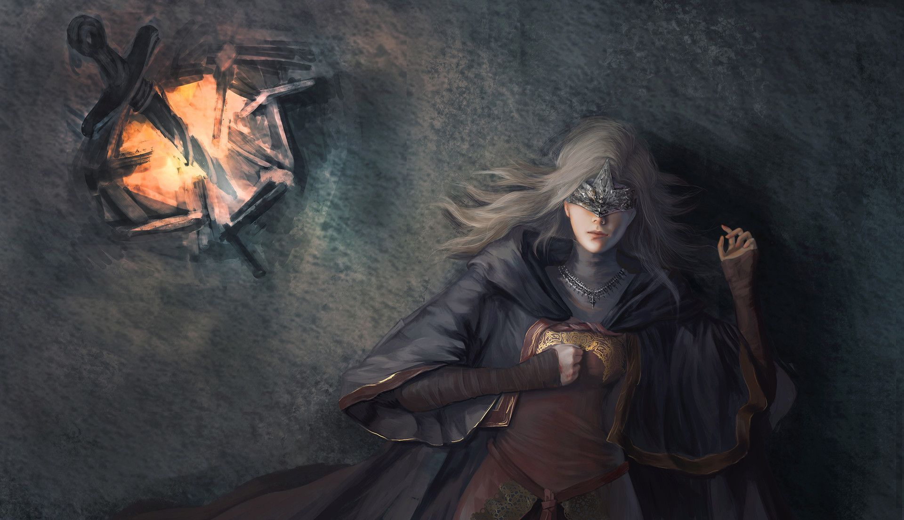
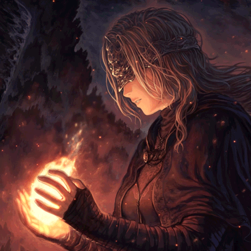

Doações
Doação de Estus Flask e chamas para se manifestarem nas fogueiras, essa poderosa forma curativa é restaurada ao se sentar em uma bonfire

Analisando assim, vemos grande importância nas Firekeepers, sem elas é impossível de avançar e chegar ao seu objetivo final
Analisando assim, vemos grande importância nas Firekeepers, sem elas é impossível de avançar e chegar ao seu objetivo final
